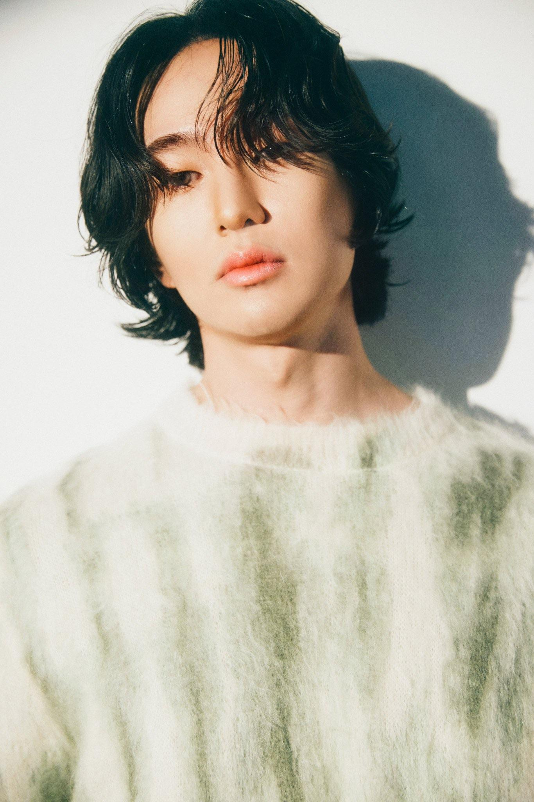

Lee Jin Ki
Biografía

Onew, cuyo nombre real es Lee Jinki, nació el 14 de diciembre de 1989 en Gwangmyeong, Corea del Sur. Es cantante, compositor y actor, reconocido principalmente por ser el líder y vocalista principal del grupo SHINee. Desde su debut en 2008 bajo la agencia SM Entertainment, ha destacado por su timbre vocal cálido y su estabilidad en presentaciones en vivo.Vida personal
Onew es conocido por mantener una personalidad reservada y tranquila fuera de los escenarios. A lo largo de los años, ha sido reconocido por su sentido del humor y su liderazgo dentro del grupo. En 2018, cumplió con su servicio militar obligatorio en Corea del Sur, finalizando en 2020, lo que marcó una pausa temporal en sus actividades artísticas antes de retomar su carrera musical con nuevos proyectos tanto grupales como individuales.
Carrera Musical
Como integrante de SHINee, Onew ha participado en la producción de múltiples álbumes que han consolidado al grupo como uno de los más influyentes dentro del K-pop. Su capacidad vocal le ha permitido interpretar una amplia variedad de géneros musicales, desde baladas hasta pop contemporáneo.
En 2018, inició su carrera como solista con el lanzamiento de su primer mini álbum titulado Voice, donde mostró un estilo más íntimo y emocional. Más adelante, continuó desarrollando su identidad artística con proyectos como Dice (2022), reafirmando su versatilidad como intérprete.
Además de su trabajo en la música, ha participado en producciones de teatro musical como Rock of Ages y Midnight Sun, ampliando su presencia en el ámbito artístico y demostrando sus habilidades interpretativas sobre el escenario.
Filmografía
Series de televisión
- Dr. Champ (닥터 챔프; 2010).
- Athena: Goddess of War (아테나: 전쟁의 여신; 2010).
- Oh My God x2 (오마이갓 x2; 2012).
- Pure Love (일말의 순정; 2013).
- Welcome to Royal Villa (시트콩 로얄빌라; 2013).
- Descendientes del sol (태양의 후예; 2016).
- 4 minutes and 44 seconds (4분 44초; 2022).
Programas de televisión
Presentador
- Flower Boys Generation (지금은 꽃미남 시대; 2009).
- Night Star (밤샘 버라이어티 야행성; 2010).
- Show! Music Core (쇼! 음악중심; 2010-2011).
- Incheon K-Pop Concert (인천 K-POP 콘서트; 2012).
- M! Countdown Ni Hao Taiwan (엠카운트다운 니하오-타이완; 2013).
- Golden Camera (황금카메라; 2013).
- Dream Concert (드림콘서트; 2013).
- Music Bank in Hanoi (뮤직뱅크 인 하노이; 2015).
- Inkigayo (인기가요; 2015).
Participante
- The Sea I Wished For (2021-, miembro)
- Law of the Jungle in Brazil (2014; ep. 108 - 112).
- Law of the Jungle in Borneo: the Hunger Games (2014; ep. 105 – 107).
- Hello Counselor (2012, 2013; ep. 72, 113 y 147).
Vídeos musicales
- Vanilla Love Part 2 de Lee Hyun Ji (2010).
- Heize - Don't know you (2017).